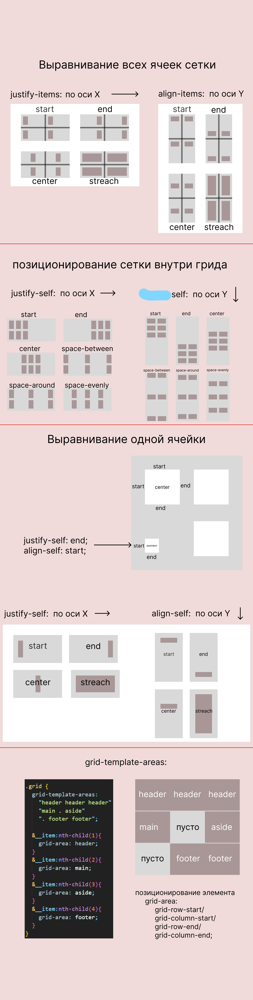

Grid
Чтобы растянуть грид-элемент, используют слово span, а после указывают число колонок, которые элемент должен занять:
.element {
grid-column: span 2; // растянется на две колонки
}
grid-auto-flow
Значение по умолчанию row говорит располагать элементы в том порядке, в котором они идут в разметке, и при необходимости создавать новые ряды.
Но если указать значение dense, то контейнер будет заполняться так, чтобы не было пропусков.
Значение dense заставляет грид-контейнер заполнять пустые ячейки первым подходящим по размеру грид-элементом. При этом визуальный порядок на странице может отличаться от порядка элементов в разметке. Если порядок элементов важен, лучше это значение не использовать.

Положение всей сетки
justify-content: start | end | center |space-between | space-around | space-evenly;
align-content: start | end | center | space-between | space-around | space-evenly;
Положение содержимого ячеек
place-items: align-items / justify-items;
justify-items: start | end | center | streach(по дефолту);
align-items: start | end | center | streach(по дефолту);
Положение конкретной ячейки
place-self: align-self / justify-self;
justify-self: start | end | center | streach(по дефолту);
align-self: start | end | center | streach(по дефолту);
grid-template
grid-template: grid-template-rows / grid-template-columns;
grid-row / grid-column
grid-row: grid-row-start / grid-row-end;
grid-column: grid-column-start / grid-column-end
grid-area
.grid-area__inner {
border: 1px solid #000;
max-width: 300px;
width: 100%;
min-height: 250px;
display: grid;
grid-template-rows: 1fr 3fr 1fr;
grid-template-columns: 1fr 1fr 1fr 1fr;
grid-template-areas:
"header header header header"
"main main . aside"
"footer footer footer footer";
точка делает пустым блок
}
.grid-header {
grid-area: header; grid-area: имя области
background-color: rgba(255, 0, 0, 0.327);
}
.grid-main {
grid-area: main;
background-color: rgba(169, 38, 193, 0.475);
}
.grid-aside {
grid-area: aside;
background-color: rgba(65, 155, 145, 0.517);
}
.grid-footer {
grid-area: footer;
background-color: rgb(173, 195, 114);
}
repeat(auto-fill, minmax(3em, 1fr))
1
2
3
4
5
repeat(auto-fit, minmax(3em, 1fr))
1
2
3
4
5
То же самое но на флексах
flex-container: flex-flow: row wrap;
flex-item: flex: 1/1/3em;
Эти элементы поделили свободное пространство между собой, а не выровнялись по элементам над ними Во flex-контейнере распределение свободного пространства действует в рамках всей строки.